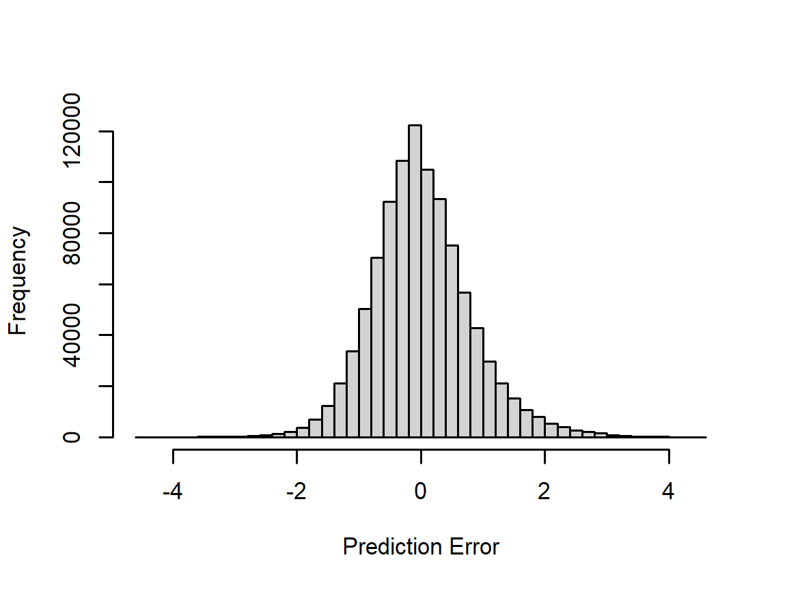
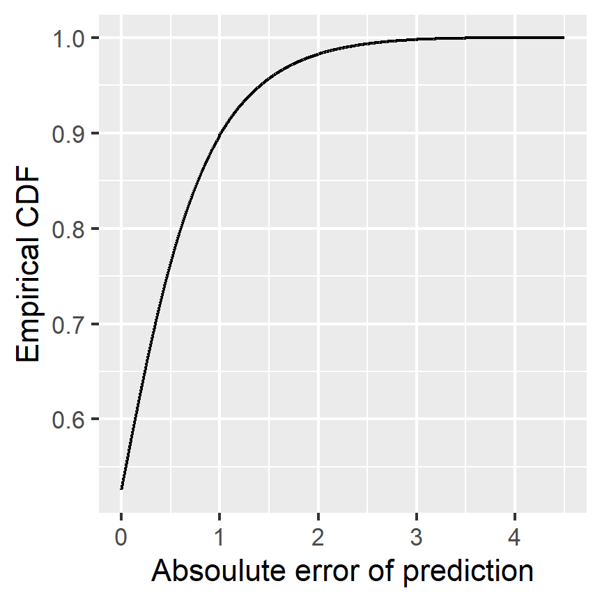

Chapter 4 Final validation
We select our best model (3.1) for validation against the validation dataset.
save(mu, movie_biases_reg, user_biases_reg, genre_biases_reg,
f_t, Uidx, Vidx, U, V, file = 'FINAL_model.Rdata')The number of parameters in the model is:
nrow(movie_biases_reg) + nrow(user_biases_reg) + nrow(genre_biases_reg) +
length(f_t) + length(U) + length(V)## [1] 1209852The final RMSE computed with the validation set is:
predicted_ratings_FINAL_VALIDATION <- validation |>
mutate(weekNum = (timestamp - min(timestamp)) |>
as.numeric(unit = "days") |> {\(x) floor(x/7) + 1}() ) |>
mutate(f_t = f_t[weekNum]) |>
left_join(movie_biases_reg, by='movieId') |>
left_join(user_biases_reg, by='userId') |>
left_join(genre_biases_reg, by='genres') |>
mutate(pred = mu + b_i + b_u + b_g + f_t +
map2_dbl(userId, movieId, \(u,v) U[Uidx[u],] %*% V[Vidx[v],])) |>
pull(pred) |> clamp()
# Compute RMSE and add to data.table
RMSE(predicted_ratings_FINAL_VALIDATION, validation$rating)## [1] 0.7941947The plot below plots a histogram of prediction errors:
par(cex = 0.7)
hist(predicted_ratings_FINAL_VALIDATION - validation$rating, 50,
xlab = 'Prediction Error', main = '')
Below is a plot of the cumulative distribution of the absolute error:
the_ecdf <- ecdf(predicted_ratings_FINAL_VALIDATION - validation$rating)
par(cex = 0.7)
qplot(seq(0,4.5,0.001), the_ecdf(seq(0,4.5,0.001)),
xlab = 'Absoulute error of prediction', ylab = 'Empirical CDF', geom = 'line')
The proportion of predictions are within half a star of the actual rating is:
mean(abs(predicted_ratings_FINAL_VALIDATION - validation$rating) < 0.5)## [1] 0.5169635